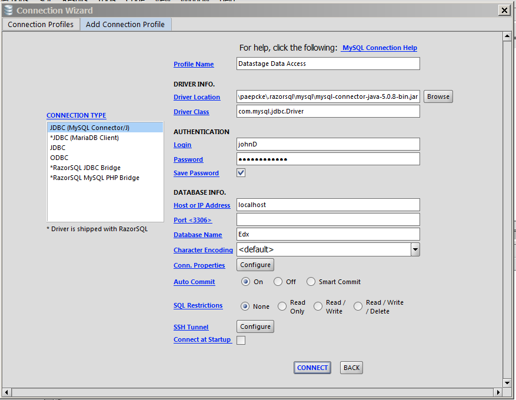
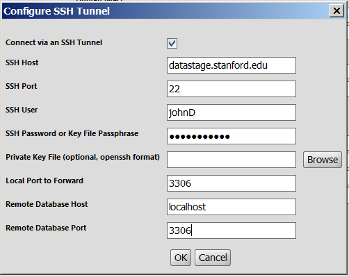
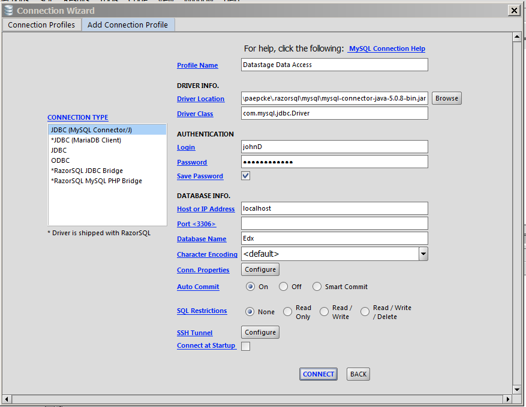
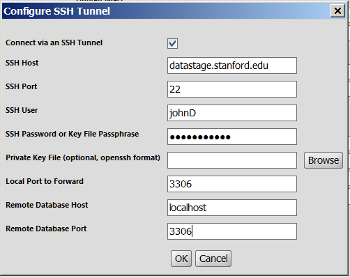
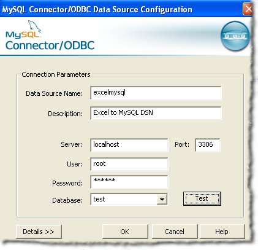
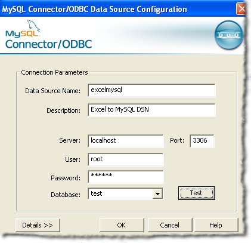

Browsing and Querying the Data
A number of applications are available for browsing data stored in
MySQL databases, the type in which VPOL data resides. Some
applications
are discussed
on the
Web. Froq
and SequelPro are available
for the Mac. One cross platform tool
is RazorSQL. It works on Mac,
Linux, and Windows. All these tools list available tables, allow some
browsing over the tables, and allow one to enter queries whose results
appear in the interface. Connecting RazorSQL is explained below; the
other tools work through similar procedures.
RazorSQL
The application RazorSQL, which works under Mac, Windows, and
Linux, can create either a tunneled or a direct connection to
MySQL. Only tunneling is possible for connecting to Datastage.
The concept is that your application (e.g. RazorSQL) first logs into
the Datastage machine, and once there logs into the MySQL database.
The advantage over logging straight into the MySQL database is
security. The 'tunnel' that carries your data to and from the remote
database encrypts the data as it travels over the Internet.
The following example uses RazorSQL, but Froq and others work
similarly. You begin the connection process by choosing:
File-->New Tab (no connection)
In the subsequent screen, you click on Click to connect to a
database:
 ...resulting in something like:
...resulting in something like:
 This screen allows you to select among different connections you have
already defined. Not having defined any, you click Add Profile,
and pick MySQL from the resulting list of database types that
the application knows about.

Here is where you fill in the particulars. Leave all pre-filled fields
alone. For Profile name you pick any name that reminds you
later of what this connection is about.
Login and Password are the information you received with
your access material. They are the user ID and passwords for the MySQL
database on datastage.
For Host or IP Address you fill in
localhost. This may seem counterintuitive at first. But
remember the tunnel: the login to the database occurs only after your
GUI application has reached the remote Datastage
machine. At that point the connect is local.
The Port is left blank. In the Database field you enter
one of the databases of
Appendix A.
Next, you need to specify how the tunnel is built. This step is
equivalent to login into the Datastage machine. In RazorSQL you
click on the button labeled SSH Tunnel, which exposes the
following panel:

The SSH User and SSH Password in this panel are for
logging into the Datastage machine. You will not yourself execute that
login, but the GUI application will do it on your behalf. Click OK,
and then click Connect, and you (hopefully) see a screen other
than one informing you of failure.
At this point, you can continue via the RazorSQL manual and help
pages.
This screen allows you to select among different connections you have
already defined. Not having defined any, you click Add Profile,
and pick MySQL from the resulting list of database types that
the application knows about.

Here is where you fill in the particulars. Leave all pre-filled fields
alone. For Profile name you pick any name that reminds you
later of what this connection is about.
Login and Password are the information you received with
your access material. They are the user ID and passwords for the MySQL
database on datastage.
For Host or IP Address you fill in
localhost. This may seem counterintuitive at first. But
remember the tunnel: the login to the database occurs only after your
GUI application has reached the remote Datastage
machine. At that point the connect is local.
The Port is left blank. In the Database field you enter
one of the databases of
Appendix A.
Next, you need to specify how the tunnel is built. This step is
equivalent to login into the Datastage machine. In RazorSQL you
click on the button labeled SSH Tunnel, which exposes the
following panel:

The SSH User and SSH Password in this panel are for
logging into the Datastage machine. You will not yourself execute that
login, but the GUI application will do it on your behalf. Click OK,
and then click Connect, and you (hopefully) see a screen other
than one informing you of failure.
At this point, you can continue via the RazorSQL manual and help
pages.
Analysis Tools
Most researchers use one of the graphical user interface that were
mentioned above to browse through the data, and to issue queries. They
then save results into a comma separated values (CSV) file. Analysis
tools like SPSS can read that data. This approach is likely the least
complicated.
However, Excel, R, and SPSS are among the tools that can access data
in MySQL servers directly. After some setup, the data appears in your
table. After that setup, you are in your home territory of the tool
you are used to. This section explains how to accomplish this data
import.
The All-Important Database Connector
For all these connections, you will need a 'database connector,'
sometimes called an 'ODBC driver.' These drivers are set up just once
in your machine---Mac or Windows. To grab one of them, head over to
the MySQL
connector download page, and download the version for your
operating system (Windows or Mac). Note that even though your computer
might be of the '64 bit' type (whatever that means), you are likely to
need the 32-bit version of the database connector! This choice is
definitely the right one for Macs; for Windows it is the most likely
choice
(see why).
You start the downloaded program as you usually do on your
computer. Here is information you will need for the mostly-open data:
Server: datastage.stanford.edu
User: [your username]
Password: [your password]
Database: [see appendix A for the list of available databases]
Once you installed the connector, you will find it popping up in all
the right places among the menu options that are referred to in the
following sections.
Connecting Excel
See this reference
for how to fill your spreadsheet with a particular dataset. The result
will look like this:
 For the phase in the above referenced instructions that looks like
this:

... the information you enter will depend on whether you will be
accessing more restricted information, or the mostly open data.
Open data:
Data source name:
Description: [a reminder for yourself]
Server: datastage.stanford.edu
Port: 3306
User: [your user name]
Password: [your password]
Database: [the name of the database of
interest. See Appendix A].
For the phase in the above referenced instructions that looks like
this:

... the information you enter will depend on whether you will be
accessing more restricted information, or the mostly open data.
Open data:
Data source name:
Description: [a reminder for yourself]
Server: datastage.stanford.edu
Port: 3306
User: [your user name]
Password: [your password]
Database: [the name of the database of
interest. See Appendix A].
Connecting SPSS
Here is how you connect an SPSS sheet to one of the VPOL data
sources. Remember first to install your database connector.
In SPSS:
File-->Open Database-->New Query
Assuming you have set your connector to point to database Edx,
and that you named it MonoEdx (for whatever fanciful reason),
you will then see this:
 Choose whichever real name you gave your connector, and
click next. You now get to choose the fields that you want to
extract from the database:
Choose whichever real name you gave your connector, and
click next. You now get to choose the fields that you want to
extract from the database:
 SPSS has figured out which tables are available in this database, and
you can start moving fields over to the right. Once you again clicked
on next, you will have an opportunity to introduce conditions
on which rows you would like to import:
SPSS has figured out which tables are available in this database, and
you can start moving fields over to the right. Once you again clicked
on next, you will have an opportunity to introduce conditions
on which rows you would like to import:
 I am still a bit puzzled by the interface of this screen. If you get
stuck, we can try to figure it out. If all goes well, you will now see
something like this:
I am still a bit puzzled by the interface of this screen. If you get
stuck, we can try to figure it out. If all goes well, you will now see
something like this:

Picking up data and visualizations prepared by staff
or friends
Sometimes staff or friends might prepare either data extracts or
visualizations for you. If they park this information on
infoviz.stanford.edu, they will give you the name of a 'workbook' on
that server. To see the visualizations, and/or to grab the underlying
data as .csv files follow these instructions:
- Go to infoviz.stanford.edu
- Log in as vpol/vpol
- Click on Workbooks
- Find your workbook, and click on it
 You should then see some number of charts that are part of the
material for you. Open one of these views. Hover over marks to
see tooltips. To see the data that is involved in a view, click the
leftmost of the icons above the view.
Its tooltip says Export. You'll get a new window with two tabs:
the one you'll be on will be just the data that went into the
particular view you were on when you clicked export.
If you want to grab all the data, choose the
tab Underlying. You'll see the first 200 rows. Note that you
might see some data in this fully populated table that you don't see
in the visualizations: some rows might be filtered out in the
views. You will need to do the same if appropriate to your further
plans.
You should then see some number of charts that are part of the
material for you. Open one of these views. Hover over marks to
see tooltips. To see the data that is involved in a view, click the
leftmost of the icons above the view.
Its tooltip says Export. You'll get a new window with two tabs:
the one you'll be on will be just the data that went into the
particular view you were on when you clicked export.
If you want to grab all the data, choose the
tab Underlying. You'll see the first 200 rows. Note that you
might see some data in this fully populated table that you don't see
in the visualizations: some rows might be filtered out in the
views. You will need to do the same if appropriate to your further
plans.
 Finally, to download, click the link Download all rows as a text
file
Finally, to download, click the link Download all rows as a text
file
How to Set up an SSH Tunnel
An ssh tunnel is a connection between two computers that encrypts the
information it carries. Sometimes a server machine is running a
service that client applications on another machine can connect
to. For example, Excel connecting directly to a MySQL database is such
an example. Similarly, Froq and RazorSQL, the graphical querying tools
mentioned earlier, might connect directly from your computer to the
MySQL database that runs on the datastage.stanford.edu machine.
This style of direct connection has your password go over the Internet
unencrypted when you log into the database. This vulnerability to wire
tapping is a disadvantage of direct connections. On the other hand,
setting up a direct connection is relatively easy, and client side
applications, the programs you use on your computer to connect to the
database, know how to construct a direct connection.
To protect data more securely, a tunnel may first be
constructed between your computer and the database server
computer. Your commands to the database then first travel encrypted to
the server computer through the tunnel. Once they arrive, the commands
are handled as if they had been issued on the server computer itself
in the first place.
 To set up a tunnel between your computer and datastage.stanford.edu,
you type the command at the bottom of the illustration into a terminal
window before you ask your data access application to try and
get to the data. The command says: set up a secure connection
(ssh) to machine datastage.stanford.edu; to applications
on my own computer the connection is to look like a database to which
I write via my out-port 5556. The connection should function
Like a tunnel (-L). On the database on the other end, the
commands I send should look like they were issued on its
machine (localhost from the database's point of view), and were
issued directly into the in-port where the database normally listens
to (3306), as it does in the direct connection case.
The -f -N just make it so that you can keep using the terminal
window you used to type in the command.
Important point: in order to get into that in-port 22 in the figure,
you will need a password; the same password you would need to log into
that machine. In order to get through the in-port 3306 into the
database within the server, you will need a second password, the one
that authenticates you to the database. You would need that one in the
direct connection as well, unless the database maintainer has not set
a password for you.
To set up a tunnel between your computer and datastage.stanford.edu,
you type the command at the bottom of the illustration into a terminal
window before you ask your data access application to try and
get to the data. The command says: set up a secure connection
(ssh) to machine datastage.stanford.edu; to applications
on my own computer the connection is to look like a database to which
I write via my out-port 5556. The connection should function
Like a tunnel (-L). On the database on the other end, the
commands I send should look like they were issued on its
machine (localhost from the database's point of view), and were
issued directly into the in-port where the database normally listens
to (3306), as it does in the direct connection case.
The -f -N just make it so that you can keep using the terminal
window you used to type in the command.
Important point: in order to get into that in-port 22 in the figure,
you will need a password; the same password you would need to log into
that machine. In order to get through the in-port 3306 into the
database within the server, you will need a second password, the one
that authenticates you to the database. You would need that one in the
direct connection as well, unless the database maintainer has not set
a password for you.